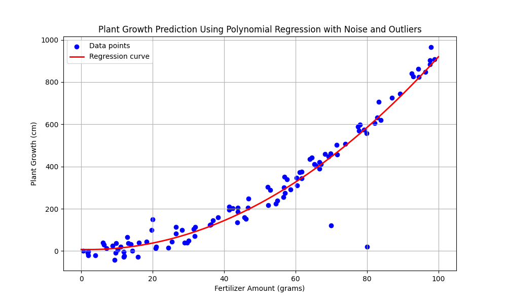

Regression is a supervised learning technique used to predict a continuous target variable based on one or more predictor variables. It is widely used in various fields, such as finance, economics, biology, and engineering, to model the relationship between variables.
In this example, we will use polynomial regression to predict the growth of a plant based on the amount of fertilizer used. The relationship between the amount of fertilizer and plant growth can often be modeled as a non-linear function, where the growth increases with the amount of fertilizer up to a certain point, and then levels off.
Below is an example plot of a polynomial regression model predicting plant growth based on the amount of fertilizer:
